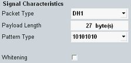

Signal Characteristics
The main view provides only the most important settings for fast access. The set of displayed parameters depends on the selection in the pane "General Setup".

Signal characteristics
The settings are the same as in the configuration tree, see "Signal Characteristics Configuration".